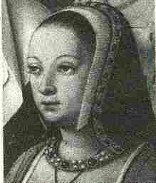

Seziz Wengamp

Ton 1 - Barzhaz Breizh (hervez kempennadur gant Friedrich Silcher, 1841)
Ton 2 Kanet gant Marc'harid Fulup. Enrollet gant François Vallée e 1900
Ton 3 Rhyfelgyrch Cabden Morgan (cf. Combat de Saint-Cast)
(Kempennadurioù MIDI gant Chr. Souchon)
1.Porzer, digorit an nor-man,
An Aotrou Roc'han zo aman,
Ha daouzeg mil soudard gantan,
Da lakaad seziz war Wengamp
2.- An nor-mañ na vo
digoret
Na deoc'h na da zen all ebet,
Ken na lâro dukez Anna,
A zo
mestrez war ar gêr-mañ.
3.- Digoret vo ar perzhier-mañ
D'ar priñs
diwirion zo amañ
Ha daouzek mil soudard gantañ,
Da lakaat seziz war
Wengamp ?
4.- Va dorioù a zo morailhet,
Va mogerioù zo kreñvaet,
Fae ve ganin deus o c'hlevet
Gwengamp na vo ket kemeret.
5. Na pa
vent triwec'h miz aze,
Na ve ket kemeret gante
Karget ho kanol ; poan ha
bec'h !
Ha gwelomp piv en devo nec'h !
6.- Tregont boled a zo amañ,
Tregont boled 'vit e gargan
Poultr na vank, na plom tamm ebet
Na
staen da ober kenneubet. -
7.Tre m'ed'o tistroiñ ha pignet,
Gant un
tenn poultrenn oe tizhet,
Gant un tenn poultr demeuz ar c'hamp,
Gant un
den anvet Goazgaram.
8.Dukez Anna a lavare
Da c'hwreg ar c'hanolier
neuze :
- Aotrou Doue ! petra vo graet ?
Setu ho pried paour tizhet !
9.- Na pa ve ma fried marv,
Me rafe ma-un' en e dro
Hag e ganol me
e gargo,
Tan ha kurun ! ha ni welo !
10.Oa ket he ger peurachuet,
Ar mogerioù zo bet freuzet,
An norioù a zo bet torret
Ha leun ar gêr
a zoudarded.
11.- Deoc'h, soudarded, ar merc'hed koant,
Ha din an aour
hag an argant,
Hag holl teñzorioù kêr Wengamp,
Hag ouspenn ar gêr
he-unan !-
12.Dukez Anna en em strinkas
War he daoulin, pa e glevas :
- Itron Varia-Gwir-Sikour,
Ma piijfe ganeoc'h, hor sikour ! -
13.Dukez Anna dal' ma glevas,
Trezek an iliz a redas
Ha war he
daoulin 'n em stouas,
Ha war an douar yen ha noazh :
14.- Ha c'hwi
garfe, gwerc'hez Vari,
Gwelet ho ti da varchosi,
Ho sakristi da gav gwin
Hoc'h aoter vras da daol kegin ?-
15.Ne oa ket peurlâret he c'her,
Ma teuas ur spont bras e kêr
Gant un tenn kanol oa laosket
Ha nav
c'hant den a oa lazhet
16.Ha gant ar strak an euzhusañ,
Ha gant an tier
o krenañ
Ha gant son-vrall an holl gleier,
O seniñ o-unan e kêr.
17.- Pachig, pachig, pachig bihan,
Te zo prim, ha skañv ha buan,
Kae timat da veg an tour-plad,
Da c'hout piv zo o vrañsellat.
18.Eus da gostez zo ur c'hleze,
Mar ka'ez den bennak aze,
Mar ka'ez
den bennak o son,
Plant da gleze en e galon ! -
19.O vont d'al lae, eñ
a gane,
O tont d'an traoñ, eñ a grene
- Beg an tour-plad edon-me bet,
Ha den ebet n'em eus gwelet;
20.Ha den eno n'em eus gwelet,
Nemet
ar Werc'hez venniget,
Ar Werc'hez hag he mab, avat,
'Re-se a zo o
vrañsellat.-
21.Ar priñs diwirion lavare
D'e soudarded, pa e gleve :
- Sternomp hor c'hezeg, ha d'an hent !
Ha laoskomp o zier gant ar sent -
Variante tirée du premier carnet de collecte de La Villemarqué

P. 106
Seziz Wengamp
(a) E-barzh ar bloaz mil ha pemp-kant
E teuas ar seziz war Wengamp
Ha bremañ zo bloaz mil pemp-kant seizh:
Voa diskennet seziz war Vreizh.
(b) War borzh Lokmikael voa ar Saozon,
An Alamaned war borzh Roazhon,
War borzh Plomenn voa n' Irlanded
Hag en ur plas all 'r Flamanked.
(c) Ar
Priñs Denoblin
lavare
War borzh Roazhon pa zarbare:
(1.1) - Porzhier, digorit 'r perzhier-mañ
D'ar priñs Denoblin zo amañ!
P. 107
(d) D'ar priñs Denoblin zo amañ!
(1.2) Triwec'h mil kavaliour gantañ
Triwec'h mil kavaliour tud vailhant
Da lakaat seziz war Wengamp. -
(e) Ar porzhier koz pa e glevas,
D'ar priñs Denoblin respontas:
(2.1)- 'R perzhier-mañ n' vo ket digoret
Na d'eoc'h-hu na d' priñs all erbed,
(2.2) Ken m' bo goulet gant 'n dukez Ana
A zo mestr war ar perzhier-mañ.
(f) An dukez Ana respontas
D'ar c'hanolier koz pa glevas:
(4.1) - Va dorioù a zo morailhet
Ha va murioù zo simañtet
(4.2) Ne ran ket a gaz o gweled
Ha mar 'peus ur c'hanol braz karget.
Ha mar 'peus ur c'hanol braz karget,
Ker Wengamp n' vo ket kemeret. -
(g) Ar c'hanolier bras respontas
D'an Dukez Ana p'e lavarez:
- Emaon estonet deus e gargenn.
(6.1) Tregont bouled rollet zo ennañ.
P. 108
(h) Un hanter boezel a mitrailh plomb
Ha mui, pe gement-all poultr kanol
Ha mui, pe gement-all draje bras
Da rey d'ar priñs Denobliñ war e fas. -
(7) N'e oa ket he gir peurlavaret,
'R c'hanolier braz a zo lazhet
Gant an tenn poultr gwenn deuz ar gambr
Gant mab unan voa er garant(?).
(8) An dukez Ana lavare
D'ar ganolierez goz neuze:
- 'Troù Doue, petra vezo graet.
Setu ar c'hanolier lazhet.
(9) Ar ganolierez lavare
D'ar dukez Ana pa gleve:
- Mar vije ar c'hanol braz karget
M-bije bet rebec'h va pried. -
(10) Ne voa ket ar gir peurechuet
An dorioù zo bet torret.
An dorioù zo bet torret.
Karget voa 'r ger a soudarded.
P. 109
(i) Ar priñs Denoblin lavare
' Barzh e Ker Gwengamp p'antree:
(11.1) - Deoc'h, soudarded, vo merc'hed koant
Ha din vo 'n aour hag an arc'hant. -
(j) An dukez Ana lavare
D'ar priñs Denoblin p'he salude:
- Mar vije karget 'r c'hanol braz
M'em-vije gounet hiriv va gwaz. -
(13) An dukez Ana 'vel ma glevas
War he daoulin noazh 'n'em strinkas:
- O Itron Varia Gwir Sikour,
Ha plijet ganeoc'h-hu hon sikour? -
(k) Ar ganolierez lavare
E benn an tour plad pa errue:
- Me wel aze ur rejimañt fin.
O c'halon en o c'hreiz o c'hoarzhin.
Bremañ soudenn hen e gelfet gin! -
(15) Voa ket ar ger peurlavaret,
Triwec'h kant anezhe voa lazhet.
Triwec'h kant anezhe voa lazhet.
Mui pe gement-all oa bleset.
P. 110
(l) 'R priñs Denoblin a goulenne
'Barzh ker Gwengamp pa tremene:
- Pelec'h 'ma merc'hed e ger-mañ
A lakaa 'r c'hanol da brokañ? -
(12) An dukez Ana, 'vel ma gwelas,
'Barzh an iliz vras 'n-em strinkas.
- Itron Varia Gwir Sikour,
Graet din tec'hiñ war 'n adversour!
(14) Ha c'hwi ve kontant, Gwerc'hez Vari,
Lakaat outi ur varchosi,
Ho sakristi da kav ar gwin
Hoc'h aoter vraz da daol kegin? -
(15.1) Voa ket he pedenn peurachuet
Ar c'hleier da zon komañset.
(16.2) Komañset ar c'hleier da zon,
Ken a spouron holl o c'halon.
(m) Ar priñs Denoblin lavare
D'he pajik bihan pe n'he gleve:
(17.1)- Pajik, pajik, ma paj bihan,
Te zo dilijañt ha buan;
P. 111
(17.2) Ha kerzhi-te da veg an tour plad
Da goût pe hen a zo da brañskellat,
(18.2) Ha mar zo den ennañ o son,
Plañti-te da gleve en he c'halon. -
(19) Eñ a ya e-krec'h en ur ganañ.
Hag a zeu d'an traoñ 'n ur ouelañ.
- 'Beg an tour plad me a zo bet.
Ha mad, añv Doue, n'em eus gwelet.
(20) Nemed 'r Werc'hez Vari hag he map.
Ar re-se zo ouzh o brañskellat.
Evel ur wazh a red o gwad! -
(21.1) Ar priñs Denobliñ lavare
D'e holl soudarded pa gleve:
(n) - Profit, ma soudarded paour, pemp a skoed,
Me, va-unan, a profo daouzek;
(o) Me, va-unan, a rei daouzek
Da repariñ an domaj 'm-eus graet.
(21.2) Bridomp kezek, ha deomp d'an hent
Ha lesomp o tier gant ar zent. -
P. 112
(p) Ar priñs Denoblin lavare
D'eus ker Gwengamp pa sortie:
(q) - Pa m'am-vije Gwengamp gounet,
Ouzhpenn c'hwech gement 'm-eus kollet.
Ma kollan va buhez e c'hont d'ar c'her
Me vo kollet holl an antier!